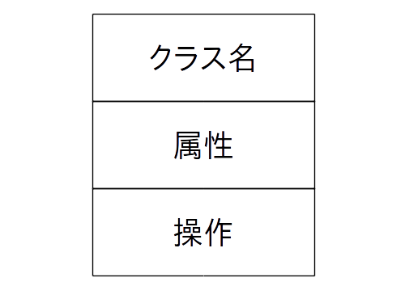
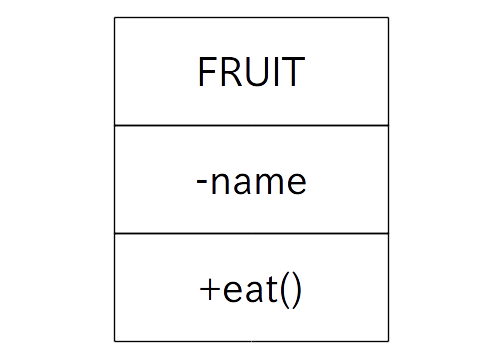

UML(Unified Modeling Lnaguage: 統一モデリング言語)とは構築するシステムの構造を分かりやすくするために作られた人工的な言語で、簡単に言うと設計書の書き方のルールです。
言語とは言いますが、実際には文章だけでなく「ダイアグラム」という図形の描き方もルールとして定めています。
さてそれらのダイアグラムの中には「状態遷移図」「シーケンス図」「クラス図」「ユースケース図」などの有名な手法がいくつも含まれています。
今回はオブジェクト指向プログラミングにおいてクラスを設計する時に良く用いられる「クラス図」の描き方について学びましょう。
クラス図とは「クラス間の関係を表した図」であり、最も基本となるのはひとつのクラスだけを表した単一クラス図です(図1)。
図1: 単一クラス図
この単一クラス図において
を記入し、更にアクセス修飾子を属性と操作の名前の前に次の記号で記します。
なお、フィールドの型、メソッドの戻り値、メソッドの引数などは省略可能です。
またコンストラクタ、 getter 、 setter も省略可能です。
この辺りのルールについては特に決まりは無いので所属する組織のやり方に従って下さい。
では具体例を挙げてみましょう。例えば次の FRUIT クラス
public class FRUIT{
private String name;
public String get_name(){ return name; } // name の getter
public void set_name( String _name ){ name = _name; } // name の setter
public FRUIT(){} // コンストラクタ
public void show()
{
System.out.println( name + "美味い" );
}
};
をクラス図で表すと次の図2になります。
なお name フィールドの型、 show メソッドの戻り値と引数、コンストラクタ、 name フィールドの getter と setter は省略しています。
図2: ソース 1 のクラス図
